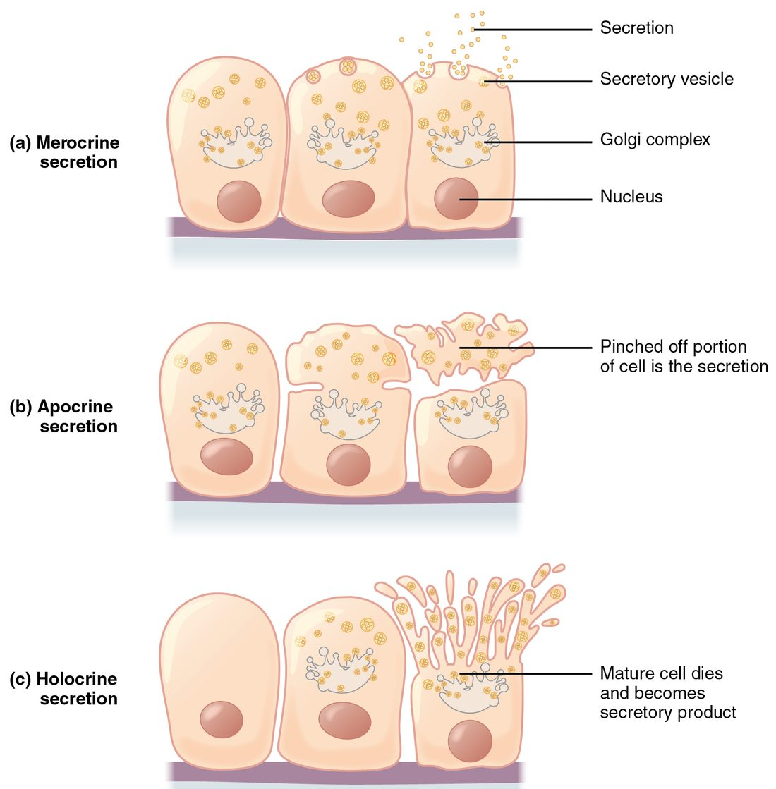

Glands: endocrine and exocrine
1Why this matters
Mrs. Lee, 62, has a tumor pressing on the main duct of her pancreas. Her stools turn pale and greasy because the fat in her meals is no longer being digested. Yet her blood levels of the hormones her pancreas makes are normal. One organ, one blockage, and one function lost while the other carries on: the difference is where each product goes.
2What this builds on
3Quick check before you start
1. A cell releases the contents of a vesicle by fusing the vesicle with its plasma membrane. What is this process called?
- Endocytosis
- Exocytosis
- Facilitated diffusion
Show the answer
Exocytosis (exo- = outside, cyt/o = cell) is the fusion of a vesicle with the plasma membrane, which empties the vesicle's contents outside the cell. Endocytosis brings material in; facilitated diffusion moves single molecules through carrier or channel proteins.
- Endocytosis:
- Correct: Exocytosis:
- Facilitated diffusion:
2. In an epithelium, which side of each cell faces the lumen or the outside surface?
- The basal surface
- The apical surface
- The basement membrane
Show the answer
The apical surface faces the lumen or the outside. The basal surface faces the basement membrane and the connective tissue beneath it.
- The basal surface:
- Correct: The apical surface:
- The basement membrane:
3. A hormone reaches every tissue in the blood. Which cells does it change?
- Every cell it touches
- Target cells that carry a matching receptor protein
- Only cells next to the gland that made it
Show the answer
A hormone changes only its target cells: the cells with a receptor protein that binds it. Other cells are exposed to it but do not respond.
- Every cell it touches:
- Correct: Target cells that carry a matching receptor protein:
- Only cells next to the gland that made it:
4Anatomy

5How it works, step by step
- Ribosomes on the rough endoplasmic reticulum of a gland cell build a protein product.The protein moves to the Golgi apparatus, which modifies it and packs it into secretory vesicles.
- The secretory vesicles travel to the apical surface of the cell.Each vesicle fuses with the plasma membrane (exocytosis) and empties its product outside the cell.
- In an exocrine gland, the product lands in the lumen of a duct.The duct carries the product to a surface, such as the skin or the inside of the gut, where it acts.
- In an endocrine gland there is no duct, so the product (a hormone) lands in the interstitial fluid.The hormone diffuses into nearby capillaries and travels in the blood.
- The blood carries the hormone to every tissue.Only target cells with a matching receptor protein bind it and change their activity.
6Core concepts
7A common mistake
The wrong idea: Exocrine glands make enzymes and endocrine glands make hormones, so you can tell them apart by their product.
What actually happens: The two kinds of gland are defined by the route their product takes, not by the chemical. An exocrine gland sends its product through a duct to a surface; an endocrine gland has no duct and releases its product toward the blood. Many exocrine glands make no enzymes at all (a goblet cell makes mucus), and enzymes and many hormones are both proteins. Always ask where the product goes.
8Check yourself
Anything you miss goes into your review queue.
1. Under the microscope, a cluster of epithelial cells sits wrapped in capillaries. You find no duct anywhere near it, and the cells are full of secretory vesicles. What kind of gland is this most likely to be?
- A simple tubular exocrine gland
- A mucous gland
- An endocrine gland
- A unicellular exocrine gland
Show the answer
No duct plus a rich capillary supply is the signature of an endocrine gland. Its cells release hormones into the interstitial fluid, and the hormones diffuse into the nearby capillaries.
- A simple tubular exocrine gland: A simple tubular gland is exocrine, so it has a duct running to a surface. The absence of any duct rules it out.
- A mucous gland: A mucous gland is a kind of exocrine gland. It releases mucus through a duct onto a surface, and no duct is present here.
- Correct: An endocrine gland: Correct. Ductless cells surrounded by capillaries release their product toward the blood: that is an endocrine gland.
- A unicellular exocrine gland: A unicellular exocrine gland, such as a goblet cell, is a single cell sitting in a surface lining. This is a cluster of cells with no surface to empty onto.
2. Mrs. Lee, 62, has a tumor pressing on the main duct of her pancreas. Her stools become greasy because she no longer digests fat well. Her blood levels of the hormones her pancreas makes stay normal. Which explanation fits both findings?
- The tumor destroyed the hormone-making cells first
- Enzymes and hormones share the same duct
- The tumor made hormones that replaced lost ones
- Enzymes need the duct; hormones go into blood
Show the answer
The pancreas holds two kinds of gland. Its enzyme-making cells are exocrine and drain through the duct, so a blocked duct stops enzymes reaching the gut and fat goes undigested. Its hormone clusters are endocrine: they release into interstitial fluid and capillaries, so a blocked duct does not affect them.
- The tumor destroyed the hormone-making cells first: If the hormone-making cells were destroyed, hormone levels would fall. They stayed normal.
- Enzymes and hormones share the same duct: If both products shared the duct, blocking it would lower both. Normal hormone levels show the hormones take a different route.
- The tumor made hormones that replaced lost ones: Nothing in the case suggests the tumor makes hormones, and it would not explain the undigested fat. The simpler explanation is that the two products take different routes.
- Correct: Enzymes need the duct; hormones go into blood: Correct. Blocking the duct stops the exocrine product (enzymes) but not the endocrine product (hormones), which never used the duct.
3. A gland has a duct that divides again and again, like the branches of a tree. Each smallest branch ends in a rounded sac of secretory cells. What is this gland's name?
- Simple tubular
- Simple alveolar
- Compound alveolar
- Compound tubuloalveolar
Show the answer
Name the duct first, then the secretory part. A branching duct makes the gland compound, and rounded sacs make it alveolar (also called acinar).
- Simple tubular: Simple means one unbranched duct, and tubular means tube-shaped secretory parts. This gland has neither feature.
- Simple alveolar: The sacs fit alveolar, but simple means an unbranched duct. This duct branches repeatedly.
- Correct: Compound alveolar: Correct. A branching duct (compound) that ends in rounded sacs (alveolar) is a compound alveolar gland.
- Compound tubuloalveolar: The branching duct fits compound, but a tubuloalveolar gland has both tube-shaped and sac-shaped secretory parts. Every branch here ends in a rounded sac.
4. In a gland, cells near the base are small and dividing. Cells farther in are larger and packed with lipid. At the center, cells are breaking apart, and their fragments are part of the fluid the gland releases. Which mode of secretion is this?
- Merocrine
- Holocrine
- Apocrine
- Endocrine
Show the answer
In holocrine secretion the whole cell becomes the product. Cells fill with product, break apart, and are replaced by new cells from dividing stem cells at the base.
- Merocrine: In merocrine secretion the cell releases vesicle contents by exocytosis and stays whole. Here the cells break apart.
- Correct: Holocrine: Correct. Whole cells breaking apart and joining the secretion, with dividing cells at the base replacing them, is holocrine secretion.
- Apocrine: In apocrine secretion only the apical part of the cell pinches off, and the rest of the cell survives. Here whole cells break apart.
- Endocrine: Endocrine describes where a product goes (into the blood), not how a cell releases it. It is not a mode of secretion.
5. A drug stops mitosis in the stem cells at the base of a holocrine gland for two weeks. Predict each variable at the end of that time.
| Variable | Change |
|---|---|
| Number of new secretory cells produced in the gland | — |
| Amount of secretion the gland releases | — |
| Output of a nearby merocrine gland whose cells are not dividing | — |
Show the answer
- Number of new secretory cells produced in the gland: down. New holocrine cells come from stem cells dividing by mitosis. Stopping mitosis stops that supply.
- Amount of secretion the gland releases: down. Each holocrine cell is used up when it breaks apart. With no new cells replacing them, fewer cells are left to fill and break apart, so output falls.
- Output of a nearby merocrine gland whose cells are not dividing: no change. A merocrine cell releases its product by exocytosis and survives, so it does not depend on a steady supply of new cells. Its output is unaffected.
6. A student says: "If a gland makes an enzyme it is exocrine, and if it makes a hormone it is endocrine." To decide the type of a gland you have never seen before, which observation settles it?
- Whether the product is a protein
- Whether the cells store their product in secretory vesicles
- Whether the product leaves by a duct or into the blood
- Whether the gland is larger than a single cell
Show the answer
Exocrine and endocrine describe the route, not the chemical. A duct to a surface means exocrine; release into interstitial fluid and then blood means endocrine. The student's rule fails whenever a product breaks the pattern, and it cannot classify mucus at all.
- Whether the product is a protein: Enzymes are proteins, and so are many hormones. Knowing the product is a protein does not tell you which way it leaves.
- Whether the cells store their product in secretory vesicles: Both exocrine and endocrine cells can store their product in secretory vesicles and release it by exocytosis.
- Correct: Whether the product leaves by a duct or into the blood: Correct. Tracing where the product goes is the test that defines the two kinds of gland.
- Whether the gland is larger than a single cell: Size separates a goblet cell from larger exocrine glands, but it does not separate exocrine from endocrine: both kinds include many-celled glands.
7. Which is the clearest example of true apocrine secretion in the human body?
- A goblet cell releasing mucus
- The oil glands of the skin releasing their oily product
- The thyroid gland releasing its hormone
- Milk-making cells of the breast releasing fat droplets
Show the answer
In the milk-making gland of the breast, fat droplets leave from the apical end of the cell wrapped in a piece of its plasma membrane: true apocrine release. Some exams instead name the "apocrine" sweat-producing glands of the armpit, but electron microscope studies show those release mainly by exocytosis, so their name is historical.
- A goblet cell releasing mucus: A goblet cell releases mucus by exocytosis and stays whole. That is merocrine secretion.
- The oil glands of the skin releasing their oily product: The oil glands of the skin are holocrine: whole cells fill with product and break apart.
- The thyroid gland releasing its hormone: The thyroid gland is endocrine. The three mode names describe exocrine glands, and its hormone release is not apocrine.
- Correct: Milk-making cells of the breast releasing fat droplets: Correct. Fat droplets pinching off in a wrap of plasma membrane is the clearest example of apocrine release.
9Summary
A gland is epithelium specialized to make and release a product. An exocrine gland keeps a duct that carries its product to a surface; the smallest is a single goblet cell, and larger ones are named by their duct (simple or compound) and secretory part (tubular, alveolar or both). A serous gland releases watery fluid; a mucous gland releases mucus. An endocrine gland is ductless: it releases hormones into interstitial fluid, and they travel in the blood to target cells. Exocrine cells release their product in three modes: merocrine (exocytosis; the cell survives), apocrine (the apical end pinches off) and holocrine (the whole cell breaks apart and stem cells replace it).